九、电解和库仑分析法（121题）
一、选择题 ( 共32题 )
1. 2 分 (1127)
用 2.00A 的电流，电解 CuSO4的酸性溶液，计算沉积 400mg 铜，需要多少秒 ?
Ar(Cu) = 63.54 ( )
(1) 22.4 (2) 59.0 (3) 304 (4) 607
2. 2 分 (1129)
在 CuSO4溶液中，用铂电极以 0.100A 的电流通电 10min，在阴极上沉积的铜的质量
是多少毫克 [Ar(Cu) = 63.54] ( )
(1) 60.0 (2) 46.7 (3) 39.8 (4) 19.8
3. 2 分 (1130)
用 96484 C 电量，可使 Fe2(SO4)3溶液中沉积出铁的质量是多少克 ? [Ar (Fe) = 55.85, Ar (S) = 32.06, Ar (O)= 16.00] ( )
(1) 55.85 (2) 29.93 (3) 18.62 (4) 133.3
4. 2 分 (1131)
由库仑法生成的 Br2来滴定Tl+， Tl++ Br2─→ Tl��+ 2Br- 到达终点时测得电流为 10.00mA，时间为 102.0s，溶液中生成的铊的质量是多少克? [Ar (Tl) = 204.4] ( )
(1) 7.203×10-4 (2) 1.080×10-3 (3) 2.160×10-3_ (4) 1.808
5. 1 分 (1144)
用两片铂片作电极，电解含有 H2SO4的 CuSO4溶液，在阳极上发生的反应是( )
(1) OH- 失去电子 (2) Cu2+ 得到电子
(3) SO42- 失去电子 (4) H+得到电子
6. 1 分 (1149)
库仑滴定中加入大量无关电解质的作用是 ( )
(1) 降低迁移速度 (2) 增大迁移电流
(3) 增大电流效率 (4) 保证电流效率 100%
7. 2 分 (1155)
微库仑滴定分析时，加入大量去极剂是为了 ( )
(1) 增加溶液导电性 (2) 抑制副反应，提高电流效率
(3) 控制反应速度 (4) 促进电极反应
8. 2 分 (1165)
在恒电流库仑滴定中采用大于 45V 的高压直流电源是为了 ( )
(1) 克服过电位 (2) 保证 100% 的电流效率
(3) 保持电流恒定 (4) 保持工作电极电位恒定
9. 2 分 (1166)
用银电极电解 1mol/L Br-、1mol/L CNS-、0.001mol/L Cl-,0.001mol/L IO3-和 0.001 mol/L
CrO42-的混合溶液,Eq(AgBr/Ag) = +0.071V , E q(AgCNS/Ag) = +0.09V,��E q(AgCl/Ag) = +0.222V ,��E q(AgIO3/Ag) = +0.361V, E q(Ag2CrO4/Ag) = +0.446V，在银电极上最先析出的为
( )
(1) AgBr (2) AgCNS (3) AgCl (4) AgIO3
10. 2 分 (1167)
在控制电位电解过程中，为了保持工作电极电位恒定，必须保持 ( )
(1) 不断改变外加电压 (2) 外加电压不变
(3) 辅助电极电位不变 (4) 电解电流恒定
11. 2 分 (1205)
在库仑分析中，为了提高测定的选择性，一般都是采用 ( )
(1) 大的工作电极 (2) 大的电流
(3) 控制电位 (4) 控制时间
12. 1 分 (1548)
库仑分析的理论基础是 ( )
(1)电解方程式 (2)法拉第定律
(3)能斯特方程式 (4)菲克定律
13. 2 分 (1549)
以镍电极为阴极电解NiSO4溶液, 阴极产物是 ( )
(1)H2 (2)O2 (3)H2O (4)Ni
14. 1 分 (1550)
控制电位库仑分析的先决条件是 ( )
(1)100％电流效率 (2)100％滴定效率 (3)控制电极电位 (4)控制电流密度
15. 2 分 (1551)
用Pt电极在含有盐酸肼（NH2-NH2・HCl）的氯化物溶液中电解Ｃｕ2+,阴极反应是
( )
(1) 2Cl-→Cl2↑＋2ｅ- (2) Pt＋4Cl-→PtCl42-＋2ｅ-
(3) Pt＋6Cl-→PtCl62-＋4ｅ- (4) N2H5+ ──→ N2↑ +5H++4ｅ-
16. 2 分 (1607)
用Pt电极在含有盐酸肼(NH2-NH2・HCl)的氯化物溶液中电解Cu2+,阳极反应是( )
(1) 2Cl- ─→ Cl2↑ + 2e- (2) Pt + 4Cl- ─→ PtCl42- + 2e-
(3) Pt + 6Cl- ─→ PtCl62- + 4e- (4) N2H5+ ─→ N2↑ + 5H+ +4e-
17. 1 分 (1914)
用永停终点指示库仑滴定的终点时,在两支大小相同的铂电极上施加 ( )
(1) 50～200mV交流电压 (2) >200mV直流电压
(3) 50～200mV直流电压 (4) >200mV交流电压
18. 1 分 (1915)
控制电位电解分析法常用的工作电极
(1) 碳电极 (2) 饱和甘汞电极
(3) Pt网电极和汞阴极 (4) Pt丝电极和滴汞电极
19. 1 分 (1916)
电解时，由于超电位存在，要使阴离子在阳极上析出，其阳极电位要比可逆电极电位（ ）
（1）更负 （2）两者相等 （3〕无规律 （4）更正
20. 1 分 (1917)
电解时，由于超电位存在，要使阳离子在阴极上析出，其阴极电位要比可逆电极电位（ ）
(1) 更正 (2) 更负 (3) 两者相等 (4) 无规律
21. 2 分 (1918)
在控制电位电解法中，被测物电解沉积的分数与 （ ）
（1）电极面积A，试液体积V，搅拌速度v，被测物质扩散系数D和电解时间t有关
（2）A，V，n，D，t有关，还有被测物初始浓度c0有关
（3）与A，V，n，D，t有关，而与c0无关
（4）与A，V，n，D，t及c0无关
22. 1 分 (1919)
微库仑分析过程中，输入的电解电流 （ ）
（1）恒定的 （2）随时间呈线性变化
（3）呈指数衰减 （4）呈由小到大再减小的变化规律
23. 2 分 (1932)
库仑分析与一般滴定分析相比 （ ）
（1）需要标准物进行滴定剂的校准
（2）很难使用不稳定的滴定剂
（3）测量精度相近
（4）不需要制备标准溶液，不稳定试剂可以就地产生
24. 2 分 (1933)
微库仑分析与库仑滴定相比，前者主要特点是 （ ）
（1）也是利用电生滴定剂来滴定被测物质
（2）也是利用电生滴定剂来滴定被测物质，而且在恒流情况下工作
（3）也是利用电生滴定剂来滴定被测物质，不同之处是电流不是恒定的
（4）也是利用电生滴定剂来滴定被测物质，具有一对工作电极和一对指示电极
25. 2 分 (1934)
实际分解电压，包括 （ ）
（1）反电动势 （2）超电压
（3）反电动势加超电压 （4）反电动势、超电压和IR降
26. 2 分 (1935)
电解分析的理论基础是 （ ）
（1）电解方程式 （2）法拉第电解定律
（3）Fick扩散定律 （4）（1）、(2)、（3）都是其基础
27. 1 分 (1936)
确定电极为阳极，阴极的依据是 （ ）
（1）电极电位的高低 （2）电极反应的性质
（3）电极材料的性质 （4）电极极化的程度
28. 1 分 (1937)
确定电极为正负极的依据是 （ ）
（1）电极电位的高低 （2）电极反应的性质
（3）电极材料的性质 （4）电极极化的程度
29. 1 分 (1938)
库仑滴定不宜用于 （ ）
（1）常量分析 （2）半微量分析 （3）微量分析 （4）痕量分析
30. 2 分 (1939)
库仑滴定法的“原始基准”是 （ ）
（1）标准溶液 （2）基准物质 （3）电量 （4）法拉第常数
31. 2 分 (1940)
高沸点有机溶剂中微量水分的测定，最适采用的方法是 （ ）
（1）（直接）电位法 （2）电位滴定法
（3）电导分析法 （4）库仑分析法
32. 2 分 (1941)
某有机物加热分解产生极不稳定的Cl2，Br2等物质，最宜采用测定其量的方法是 （ ）
（1）（直接）电位法 （2）电位滴定法 （3）微库仑分析 （4）电导分析法
二、填空题 ( 共39题 )
1. 2 分 (1608)
控制电位库仑分析的先决条件是____________________________________.
2. 2 分 (1609)
库仑分析的理论基础是_______________________________________.
3. 2 分 (1610)
以镍电极为阴极, 电解NiSO4溶液, 阴极产物是________________________.
4. 2 分 (2034)
法拉第电解定律是库仑分析法的理论基础。它表明物质在电极上析出的质量与通过电解池的电量之间的关系。其数学表达式为 _____________ 。
5. 2 分 (2042)
随着电解的进行，阴极电位将不断变 ________ ，阳极电位将不断变 _______ ，要使电流保持恒定值，必须 _________ 外加电压。
6. 2 分 (2065)
库仑分析的先决条件是 ___________ 。电解 H2SO4 或 NaOH 溶液时，电解产物在阴极上为 _________ ，在阳极上为 ________ 。
7. 2 分 (2077)
在控制电位电解分析过程中,电流随时间 ___________ 。
8. 2 分 (2084)
在以铂为阴极电解镉时,铂表面新生的镉可使氢在该电极上的 ____________ 改变。
9. 2 分 (2258)
能够引起电解质电解的最低外加电压称为 _____________ 电压.
10. 2 分 (2851)
库仑分析法可以分为_____________________法和____________________法两种。库 仑分析的先决条件是_________________, 它的理论依据为__________________。
11. 2 分 (2852)
用库仑滴定法测定某试液中H+的浓度, 在Pt阴极上产生OH―,其反应为___________, Pt阳极上的反应为__________________, 它干扰测定, 需将两电极_________________。
12. 5 分 (2853)
用于库仑滴定指示终点的方法有______________, ____________,_______________, ______________。其中, ____________方法的灵敏度最高。
13. 2 分 (2854)
控制阴极电位电解的电流--时间曲线按_____________衰减, 电解完成时电流______________________。
14. 2 分 (2855)
电解某物质的外加电压通常包括_____________, _______________和________。
15. 2 分 (2856)
库仑分析的先决条件是____________________, 若阳极或阴极有干扰物质产生时, 可 采用_____________________________或_________________________方法。
16. 2 分 (2857)
控制电位电解时, 电解电流与电解时间的关系为_________________, 其中, 各符号的 含义为__________________________________________________________。
17. 2 分 (2858)
用库仑滴定法可以测定化学需氧量COD.COD是指____________________________ ________________________________________________________。测定时加入过量的K2Cr2O7, 再以Pt阴极电解产生__________________来进行“滴定”的。
18. 2 分 (2871)
电极的极化现象发生在有__________通过电极时, 根据产生的原因不同, 它可以分为 ______________和______________。
19. 2 分 (2872)
在永停法指示终点的库仑分析中, 电极面积较大的一对称为____________, 其作用是 _____________________。两根大小相同的铂丝电极称为________________, 加上小电压后, 它们的区别是____________________________。
20. 2 分 (2873)
在恒电流电解分析时, 为了防止干扰, 需加入去极剂, 以________________________ 在恒电流库仑分析中, 需加入辅助电解质, 除具有相同的目的外, 它_____________。
21. 2 分 (2874)
分解电压是指_____________________________________________________的外加 电压。理论上它是电池的__________, 实际上还需加上____________和________。
22. 2 分 (2875)
电解所需的外加电压是用来克服电池的___________, 该电池的__________和电解质溶 液的_____________。
23. 2 分 (2876)
库仑分析中为保证电流效率达到100%, 克服溶剂的电解是其中之一, 在水溶液中, 工作电极为阴极时, 应避免_____________, 为阳极时, 则应防止______________。
24. 2 分 (2877)
氢氧气体库仑计, 使用时应与控制电位的电解池装置_____联, 通过测量水被电解后产 生的___________________的体积, 可求得电解过程中_____________________。
25. 2 分 (2878)
微库仑分析法与库仑滴定法相似, 也是利用________滴定剂来滴定被测物质, 不同之处 是微库仑分析输入电流_______________, 而是随_____________自动调节, 这种分析过程的特点又使它被称为_________库仑分析。
26. 2 分 (2879)
电解分析的理论基础表现为, 外加电压的量由__________方程来决定, 产生的量由 __________定律来计算, 电解时间的长短与离子扩散有关, 它由___________定律来描述。
27. 2 分 (2880)
在库仑分析中, 为了达到电流的效率为100%, 在恒电位方法中采用_______________ 在恒电流方法中采用________________。
28. 2 分 (2881)
库仑滴定类似容量滴定, 它的滴定剂是_______________的, 它不需要用_________ 标定, 只要求测准__________________的量。
29. 2 分 (2882)
在极谱分析中, 若溶液中有微量重金属离子存在, 引起残余电流较大, 此时可采用 底液__________除去杂质。这种方法称为________________, 是电重量分析法用于_______________的一个例子。
30. 2 分 (2883)
电重量分析法可采用控制电位法和恒电流法, 它们为消除干扰而应用的方法是不同的, 前者为___________________, 后者为_________________________。
31. 2 分 (2884)
在控制电位电解过程中, 电流与时间的关系式为_________________, 表达式中, 常数与___________体积, ___________速率, ___________面积, ____________扩散系数有关。
32. 2 分 (2885)
电解分析法测定的是物质的____________________, 它与一般重量法不同, 沉淀剂是 ___________, 常常使金属离子在阴极上________________, 或在阳极上__________, 通过称量来测定其含量。
33. 2 分 (2886)
库仑分析也是电解, 但它与普通电解不同, 测量的是电解过程中消耗的_________________。 因此, 它要求____________________为先决条件。
34. 2 分 (2887)
极化是电化学中常见的现象, 在电解分析中需___________极化, 为此采用__________ 和_________________等措施。
35. 2 分 (2888)
恒电流电解的优点是_____________________, 缺点是__________________, 为此常 加入_______________来改善。
36. 2 分 (2889)
电解分析中表示电压与电流的关系式是__________________, 它被称为_________。
37. 2 分 (2890)
恒电流库仑分析, 滴定剂由_______________________, 与被测物质发生反应, 终点由 ___________________来确定, 故它又称为______________________________。
38. 2 分 (2891)
需要消耗外电源的电能才能产生电流而促使化学反应进行的装置_______________。凡 发生还原反应的电极称为_________极, 按照习惯的写法, 电池符号的左边发生 ____________反应, 电池的电动势等于________________________。
39. 5 分 (4528)
在测定S2O32-浓度的库仑滴定中, 滴定剂是_________. 实验中, 将_________ 极在套管中保护起来, 其原因是____________________________, 在套管中应加足_______________溶液, 其作用是_______________________.
三、计算题 ( 共40题 )
1. 5 分 (3001)
溶于甲醇中的四氯化碳可以在-1.0V (vs SCE)的电位下在汞电极上还原成氯仿：
2CCl4 + 2H+ + 2e-+ 2Hg(l) = 2CHCl3+ HgCl2(s)
在 -1.80V，氯仿可进一步还原成甲烷：
2CHl3+ 6H++ 6e- + 6Hg(l) = 2CH4+ 3Hg2Cl2(s)
今有一试样0.750 g，含 CCl4、CHCl3及惰性有机物。溶于甲醇后，在 -1.0V 下电解，直到电流降到接近于零。库仑计指出消耗的电量为 11.63C。然后在 -1.80V 继续电解还原至电解完全时又消耗电量 44.24 C。试计算试样中 CCl4和 CHCl3的质量分数。
( Mr(CCl4)=153.80； Mr(CHCl3) = 107.40）
2. 10 分 (3002)
用控制电位库仑分析法测定 CCl4 和 CHCl3 的含量。在 -1.0V (vs.SCE) 电位下，在汞阴极上，在甲醇溶液中和四氯化碳还原成氯仿：
2CCl4 + 2H++ 2e- + 2Hg(l) ＝ 2CHCl3 + Hg2Cl2(s)
在 -1.80V，氯仿可还原成甲烷：
2CHCl3 + 6H++ 6e- + 6Hg(l) ＝ 2CH4 + 3Hg2Cl2(s)
将 0.750g 含 CCl4、CHCl3 及惰性杂质的试样溶解在甲醇中，在 -1.0V 下电解，直至电流趋近与零，从库仑计上测得的电量数为 11.63C。然后在 -1.80V 继续电解，完成电解需要的电量为 44.24C，试计算试样中 CCl4和 CHCl3的质量分数。
3. 10 分 (3006)
欲测水中钙的含量，于一预先加有过量 Hg(NH3) Y2+ 和少量铬黑 T（作指示剂）的 50mL 氨性试样中，用汞阴极经 0.018 A 的恒电流电解 3.5 min 到达终点（以 Pt 片为阳极）。
(1) 写出工作电极和辅助电极上发生的电极反应
(2) 计算每毫升水样中含 CaCO3多少毫克
(3) 辅助电极要不要隔离？为什么？
4. 5 分 (3007)
含锌试样 1.000g 溶解后转化成氨性溶液并在汞阴极上电解。电解完毕时在串联的氢－氧库仑计上量得氢和氧混合气体 31.3 mL（已校正水蒸气压），测定时的温度是 21℃，压力是 103060.2Pa 。问试样中含锌的质量分数？[已知 Ar(Zn) = 65.38。]
5. 10 分 (3008)
以铜电极为阴极，铂电极为阳极，在 pH = 4 的缓冲液中电解 0.010 mol/L 的 ZnSO4溶液。如果在给定的电流密度下电解，此时 H2在铜电极上的超电位是 0.75V，O2在铂电极上的超电位为 0.50V，iR 降为 0.50V，p(O2)= 101325Pa，试计算：
(1) 电解 Zn2+ 需要的外加电压为多少？
(2) 在电解过程中是否要改变外加电压？为什么？
(3) 当 H2析出时 Zn�� 在溶液中的浓度为多少？
已知Eq (Zn2+/Zn) = -0.763V，E q(O2/H2O) = 1.229V
6. 10 分 (3013)
有一含 Zn2+、Cd2+ 各 0.30mol/L 的溶液，欲电解分离其中之 Cd2+（浓度降到3´ 10-6 mol/L），问：
(1) 阴极电位应控制在什么范围？(vs SCE)
(2) 在所控制的电位下电解，得到如下一组电流－时间数据：
i/A 3.2 0.84 0.20
t/min 0.50 3.03 5.75
试求 Cd2+ 浓度降到 10-6 mol/L 时，需电解多长时间？[已知 E q(Zn2+/Zn) = -0.763V，
E q(Cd2+/Cd) = -0.403V，E qSCE = 0.242V ]
7. 10 分 (3019)
在 100mL 溶液中，以电解法测定 Br-浓度时，当电解结束后 Ag 阳极增加1.598g，问：
(1) 溴离子在原始溶液中的摩尔浓度是多少？
(2) 如果 AgBr 的溶度积 Ksp = 4×10-13，那么在电解开始时 Ag 电极的电位是多少？
[已知：E q(Ag+/Ag) = 0.7995V，Ar(Ag)＝107.9，Ar(Br)＝79.9]
8. 5 分 (3024)
在 -0.96V(vs SCE) 时，硝基苯在汞阴极上发生如下反应：
C6H5NO2 + 4H++ 4e- ＝ C6H5NHOH + H2O
把 210mg 含有硝基苯的有机试样溶解在 100mL 甲醇中，电解 30min 后反应完成。从电子库仑计上测得电量为 26.7C，计算试样中硝基苯的质量分数为多少？
9. 5 分 (3026)
在给定的电解条件下，在阴极淀积了 0.500g 银，同时在阳极放出 O2。试计算溶液中加入的 H+量(以毫摩尔表示)。[Ar(Ag)＝107.9]
10. 5 分 (3028)
电解分析过程中，卤素离子将在银阳极上发生如下反应而沉积出来：
Ag + X- ＝ AgX + e-,
能否通过电解将浓度为 0.05mol/L 的 Br-和 Cl-分开（以 10-6 mol/L 作为定量除尽其中一种离子的判断根据）？如能分离，应控制阳极电位在什么范围 (vs SCE)？
(已知： Ksp(AgCl) = 1.8×10-10,Ksp(AgBr) = 5.0×10-13 ，E q(Ag+/Ag) = 0.779V)
11. 5 分 (3032)
在室温为 18℃，101325Pa 条件下，以控制电位库仑法测定一含铜试液中的铜，用汞阳极作工作电极 ，待电解结束后，串接在线路中的氢氧库仑计中产生了 14.5mL 混合气体，问该试液中含有多少铜（以毫克表示）？[Ar(Cu)= 63.55]
12. 5 分 (3053)
用库仑滴定法测定某有机一元酸的摩尔质量，溶解 0.0231g纯净试样于乙醇与水的混合溶剂中, 以电解产生的 OH-进行滴定，用酚酞作指示剂，通过 0.0427A 的恒定电流，经6 min 42s到达终点，试计算此有机酸的摩尔质量。
13. 5 分 (3054)
用控制电位库仑法测定溴离子，在 100mL 酸性试液中进行电解，Br-在铂阳极上氧化为 Br2。当电解电流降低至最低值时，测得所消耗的电量为 105.5Ｃ，试计算试液中 Br-的浓度。
14. 10 分 (3055)
用镀铜的铂网电极作阴极，电解 0.01mol/L Zn�钊芤海�试计算金属锌析出的最低pH 值。
��E q(Zn2+/Zn) = -0.763V，��h (H2)(在铜上)＝ -0.4V
15. 10 分 (3056)
试计算电解 pH = 1.0 的硫酸溶液时的氧的析出电位。
�搦�E q (O2/OH-) = +0.41V，��h(O2) = +0.40V
16. 5 分 (3062)
电解硫酸镍溶液，析出 0.118g 镍需要电量多少库仑？ [Ar(Ni) = 59]
17. 5 分 (3129)
在 100mL 含亚砷酸盐的碳酸氢钠缓冲溶液中，用电解碘化物产生的碘进行库仑滴定，通过电解池的恒定电流为 1.50mA，经 4min 27s 到达滴定终点。计算试液中亚砷酸盐的浓度并写出滴定反应式。
18. 10 分 (3321)
若使下列溶液的Hg2+浓度降至1.00×10-6mol／L, 阴极电位(vs SCE)应为多少?
(1) Hg2+的水溶液
Hg2+＋ 2e- Hg �搦�E q= 0.854 V
(2) SCN-平均浓度为 0.100 mol/L 的溶液
Hg2+＋ 2SCN- Hg(SCN)2 K(稳) = 1.8×107
19. 5 分 (3322)
用控制电位电解法分离 0.005 mol／L Cu2+和 0.50 mol／L Ag+, 计算当阴极电位达到Cu2+开始还原时Ag+的浓度为多少?
20. 5 分 (3323)
从含有0.005mol/LCu2+和0.05mol/LAg+溶液中分离Ag+, 若除去99.9%的银需要多少时间? 假定: ��d=2.0×10-3cm, D=3×10-5cm2/s, V=200mL, A=150cm2
21. 5 分 (3325)
一种溶液含有0.20mol/LCu2+和0.10mol/LH+于两个铂电极组成的电解池中进行电解。
(1) 假定氢超电位忽略不计, 问当氢开始在阴极析出时, Cu2+浓度是多少?
(2) 假定氢超电位为0.50V, 当氢开始在阴极析出时, Cu2+浓度是多少?
22. 10 分 (3326)
用0.20A电流通过电解池, 电解硝酸铜酸性溶液,通电时间为12min,在阴极上析出0.035g铜, 阳极上产生8.30mL氧(在标准状态下), 求阴极上析出铜和阳极上放出氧的电流效率?
23. 5 分 (3328)
将9.14mg纯苦味酸试样溶解在0.1mol/L盐酸中, 用控制电位库仑法(-0.65V, vs SCE)测定, 通过电量为65.7Ｃ, 计算此还原反应中电子得失数n, 并写出电池半反应. (苦味酸摩尔质量=229g/mol)
24. 5 分 (3389)
若使下列溶液的[Hg2+]降至1.00×10-6mol/L, 阴极电位(vs SCE)应为多少?
(a) Hg2+的水溶液. Hg2++2e -=Hg E=0.854V
(b) SCN-平衡浓度为0.100mol/L的溶液
Hg2++2SCN-=Hg(SCN)2 K稳=1.8´107
25. 10 分 (3390)
一种溶液含有0.20mol/LCu2+和0.10mol/LH+于两个铂电极组成的电解池中进行电解.
(1) 假定氢超电位忽略不计, 问当氢开始在阴极析出时, Cu2+浓度是多少?
(2) 假定氢超电位为0.50V, 当氢开始在阴极析出时, Cu2+浓度是多少?
26. 5 分 (3391)
用控制电位电解法分离0.005mol/LCu2+和0.50mol/LAg+, 计算当阴极电位达到Cu2+开始还原时Ag+的浓度为多少?
27. 5 分 (3392)
从含有0.005mol/LCu2+和0.05mol/LAg+溶液中分离Ag+, 若除去99.9%的银需要多少时间? 假定: ��d=2.0×10-3cm, D=3×10-5cm2/s, V=200mL, A=150cm2。
28. 5 分 (3393)
将9.14mg纯苦味酸试样溶解在0.1mol/L盐酸中, 用控制电位库仑法(-0.65V, vs SCE)测定, 通过电量为65.7Ｃ, 计算此还原反应中电子数n, 并写出电池半反应. (苦味酸摩尔质量=229g/mol)
29. 2 分 (3578)
需要消耗外电源的电能才能产生电流而促使化学反应进行的装置_______________。凡 发生还原反应的电极称为_________极, 按照习惯的写法, 电池符号的左边发生 ____________反应, 电池的电动势等于________________________。
30. 5 分 (3381)
在某一色谱分析条件下, 把含A和B以及相邻的两种正构烷烃(相差一个碳数)的混合物
注入色谱柱分析. A在相邻的两种正构烷烃之间流出, 它们的调整保留时间分别为 10.0 min、11.0 min和12.0min, 最先流出的正构烷烃的保留指数为800, 而组分B的保留指数为 882.3, 求A组分的保留指数. 试问A和B有可能是同系物吗?
31. 5分（3382）
已知组分A和B的分配系数之比为0.909,柱长为3.48mm,设有效塔板高度为0.8mm,求两者分离度。
32. 5 分 (3383)
在C100H202中, (M+1)/M为多少? 已知13C强度为1.08; 2H为0.02.
33. 5 分 (3384)
试计算CH3SH中(M+2)/M的值. 已知13C、2H和 34S的强度分别为1.08,0.02和4.40。
34. 5 分 (3385)
试计算下列分子的(M+2)/M的值:
(1) 溴乙烷 C2H5Br； (2) 氯苯 C6H5Cl； (3) 二甲亚砜 C2H6SO2。
35. 5 分 (3386)
试计算下列化合物的(M+2)/M和(M+4)/M的值:
(1) 二溴甲苯； (2) 二氯甲烷。
36. 5 分 (3387)
已知亚稳离子峰的m/e为158.2, 其离子的m/e为187, 试问在正常情况下裂解，m/e158.2峰的真实质量为多少?
37. 5 分 (3389)
若使下列溶液的[Hg2+]降至1.00×10-6mol/L, 阴极电位(vs SCE)应为多少?
(a) Hg2+的水溶液. Hg2++2e -=Hg E=0.854V
(b) SCN-平衡浓度为0.100mol/L的溶液
Hg2++2SCN-=Hg(SCN)2 K稳=1.8´107
38. 10 分 (3390)
一种溶液含有0.20mol/LCu2+和0.10mol/LH+于两个铂电极组成的电解池中进行电解.
(1) 假定氢超电位忽略不计, 问当氢开始在阴极析出时, Cu2+浓度是多少?
(2) 假定氢超电位为0.50V, 当氢开始在阴极析出时, Cu2+浓度是多少?
39. 5 分 (3391)
用控制电位电解法分离0.005mol/LCu2+和0.50mol/LAg+, 计算当阴极电位达到Cu2+开始还原时Ag+的浓度为多少?
40. 5 分 (4411)
将6.10mg K2Cr2O7溶于酸性溶液中, 通入10.0毫安的恒电流 20分钟才达到终点, 计算K2Cr2O7纯度.
四、问答题 ( 共10题 )
1. 5 分 (4082)
欲获得理想的产物，电解过程中应注意哪些问题？
2. 5 分 (4083)
要保证库仑分析法电流效率达 100%，应注意哪些问题？
3. 10 分 (4092)
快速库仑滴定微量碳的方法是将碳燃烧成 CO2，用 Ba(ClO4)2 水溶液吸收，发生下面的化学反应：Ba(ClO4)2+ CO2→ BaCO3↓ + 2HClO4，继而用库仑滴定法滴生成的 H+。就此回答：
(1) 在哪个电极上产生滴定剂？电极反应是什么？滴定的化学反应是什么？
(2) 拟用电位法指示终点，可用的指示电极、参比电极各是什么？
(3) 绘出本法库仑滴定部分的装置原理图。
4. 5 分 (4097)
应用库仑分析法进行定量分析的关键问题是什么？
5. 5 分 (4114)
试说明用库仑法测定 As(Ⅲ) 时，双铂指示电极指示电解终点的原理。
6. 10 分 (4363)
用库仑滴定法测定K2Cr2O7纯度,试回答:
(1) 用什么支持电解质? 电极反应是什么?
(2) 滴定的化学反应是什么?
(3) 采用什么措施使电流效率达100％?
(4) 用电位法指示终点, 使用的指示电极和参比电极是什么?
(5) 将6.10mg K2Cr2O7溶于酸性溶液中, 通入10.0mA的恒电流20min才达到终点, 计算K2Cr2O7纯度
7. 5 分 (4665)
简述用库仑滴定法测定化学需氧量（COD）原理和计算COD的表达式。
8. 5 分 (4666)
试比较微库仑分析法与库仑滴定法的主要异同点。
9. 5 分 (4681)
库仑滴定法和普通的容量滴定法的主要区别是什么？
10. 5 分 (4686)
库仑滴定和极谱分析都需加入某一量较大的电解质，请问它们的作用是否相同，为什么？
九、电解和库仑分析法 答案
一、选择题 ( 共32题 )
1. 2 分 (1127) (4) 2. 2 分 (1129) (4) 3. 2 分 (1130) (3)
4. 2 分 (1131) (2) 5. 1 分 (1144) (1) 6. 1 分 (1149) (4)
7. 2 分 (1155) (2) 8. 2 分 (1165) (3) 9. 2 分 (1166) (4)
10. 2 分 (1167) (1) 11. 2 分 (1205) (3) 12. 1 分 (1548) (2)
13. 2 分 (1549) (4) 14. 1 分 (1550) (1) 15. 2 分 (1551) (4)
16. 2 分 (1607) (4) 17. 1 分 (1914) (3) 18. 1 分 (1915) (3)
19. 1 分 (1916) (4) 20. 1 分 (1917) (2) 21. 2 分 (1918) (3)
22. 1 分 (1919) (4) 23. 2 分 (1932) (4) 24. 2 分 (1933) (3)
25. 2 分 (1934) (4) 26. 2 分 (1935) (4) 27. 1 分 (1936) (2)
28. 1 分 (1937) (1) 29. 1 分 (1938) (1) 30. 2 分 (1939) (4)
31. 2 分 (1940) (4) 32. 2 分 (1941) (3)
二、填空题 ( 共39题 )
1. 2 分 (1608)
[答] 100%电流效率
2. 2 分 (1609)
[答] 法拉第定律
3. 2 分 (1610)
[答] Ni
4. 2 分 (2034)
[答] m = (M/nF) ×it
5. 2 分 (2042)
[答] 负；正；不断增大。
6. 2 分 (2065)
[答] 要求电流效率 100%；阴极上 H2；阳极上 O2。
7. 2 分 (2077)
[答] 迅速下降
8. 2 分 (2084)
[答] 超电位
9. 2 分 (2258)
[答] 分解电压
10. 2 分 (2851)
库仑滴定法和控制电位库仑分析法；100％ 电流效率； 法拉第电解定律。
11. 2 分 (2852)
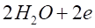 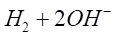
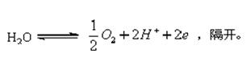
12. 5 分 (2853)
化学指示剂法、电位法、光度法、永停终点法； 永停终点法。
13. 2 分 (2854)
指数函数；趋近于零。
14. 2 分 (2855)
理论分解电压、超电压和溶液的电压降。
15. 2 分 (2856)
100％电流效率；盐桥；将产生干扰物质的电极置于套管内隔开。
16. 2 分 (2857)
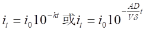
A－电极面积（cm2)，V－试液体积(cm3)
D－物质扩散系数(cm2/s)，δ－扩散层厚度(cm)，
t－电解时间(s)，io、it为起始和电解t时间时电流。
17. 2 分 (2858)
在一定条件下，1L水 中可被氧化的物质（有机物或其它可还原性物质）氧化时所需要 的氧气量；Fe2＋。
18. 2 分 (2871)
电流；浓差极化；电化学极化。
19. 2 分 (2872)
工作电极；产生滴定剂；指示电极；一个为阴极，另一个为阳极。
20. 2 分 (2873)
以维持电极电位不变；产生滴定剂。
21. 2 分 (2874)
被电解的物质在两电极上产生迅速的，连续不断的电极反应所需的最小；反电动势 ； 超电压；溶液的IR降。
22. 2 分 (2875)
反电动势；超电压；IR降。
23. 2 分 (2876)
氢气析出；氧气产生。
24. 2 分 (2877)
串；氢氧混合气体；所消耗的电量。
25. 2 分 (2878)
电生；不是恒定的；被测物质的量；动态。
26. 2 分 (2879)
电解 ；法拉第；Fick。
27. 2 分 (2880)
恒定电位；加入辅助电解质。
28. 2 分 (2881)
电生；标准物质；电流和时间。
29. 2 分 (2882)
先电解的方法； 汞阴极分离法；分离干扰离子。
30. 2 分 (2883)
控制工作电极电位；加入去极剂。
31. 2 分 (2884)
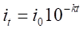
32. 2 分 (2885)
质量；电子；还原为纯金属；氧化为氧化物。
33. 2 分 (2886)
电量；100％的电流效率。
34. 2 分 (2887)
减小；较大的电极面积；加强搅拌。
35. 2 分 (2888)
电解速度快；选择性差；去极剂。
36. 2 分 (2889)
V＝（E＋－E－）＋（η＋－η－）＋iR；
电解方程式。
37. 2 分 (2890)
电极反应产生；化学指示剂或电化学方法；库仑滴定法。
38. 2 分 (2891)
电解池；阴；氧化；E阴－E阳。
39. 5 分 (4528)
[答] I2, 阴极, 防止试液酸度改变, KI, 起导电作用.
三、计算题 ( 共40题 分 )
1. 5 分 (3001)
[答] n(CCl4) = 11.63/96487 = 1.20×10-4
n (CHCl3总) = 44.24/96487 = 1.53×10-4
试样中CHCl3的 n = (1.53 - 1.20)×10-4 = 0.33×10-4
试样中CCl4的质量分数 :(1.20×10-4×153.80/0.750 = 2.47 %
试样中CHCl3的质量分数:(0.33 ×10-4×107.4)/0.750 = 0.47 %
2. 10 分 (3002)
[答] 在-1.0 V (vs.SCE)电位下,是CCl4还原:
Q1=n1F, n1=11.63/96487=1.205×10-4
在 -1.80 V (vs.SCE)下,CHCl3还原,
Q2= n2F, n2= 44.24/96487 = (1.53-1.20)×10-4 = 0.33×10-4
w(CCl4)=1.20×10-4×153.8/0.750 = 0.0247
w(CHCl3)= ( 0.33×10-4/0.750 ) = 0.0047
3. 10 分 (3006)
[答] (1) Hg(NH3)Y2- + NH4+ + 2e-= Hg + 2NH3 + HY3-��(工作电极)
H2O -2e- = 1/2O2↑ + 2H+ (辅助电极)
(2) m =Mit/nF = 100×0.018×3.5×60/(2×96487) = 1.96×10-3 g
ρ= 1.96/50 = 0.039(mg/mL)
(3) 要隔离,若不隔离,辅助电极上电解出的 H+将影响溶液的 pH ,从而影响Ca2+��
与 HY3-�才浜戏从Φ耐耆�和指示剂的变色。
4. 5 分 (3007)
[答] 在标准情况下每库仑电量析出 0.1739mL 氢、氧混合气体。
V0=( pV/T) × T0/p0 = 773×31.3/(273+21)]×273/760 = 29.6 mL
m = V0M/(0.1763×96487n) = 29.6×65.38/(16779×2) = 0.0577 g
w(Zn) =( 0.0577/1.000 ) = 0.0577
5. 10 分 (3008)
[答] (1) E (阴) = E q (Zn2+/Zn) + 0.0592/2 lg[Zn2+]
= - 0.763 + 0.0592/2 lg0.01 = - 0.822 V
��E (阳) = E q (O2/H2O) + 0.0592/4 lg[H+]4
= 1.229 + 0.592/4 lg[10-4]4= 0.992 V
��E q(阳) = 0.50 V , iR = 0.50 V
��E (外)=[ E q(阳)+h(阳)]―E (阴) + iR = (0.992 + 0.50) - (-0.822)+0.50 = 2.82 V
(2) 由于采用的是恒电流电解,电解过程 Zn2+ 浓度不断下降,阴极电位逐渐向负方向移动,根据 ��E (外)= E (阳)+ h(阳)―E (阴)+iR, 令E (阳),��h(阳)和iR可视为常数,故电解过程中外电压需逐渐增大。
当 H2析出时,��E (阴)= E q(H+/H2)+0.0592lg[H+]-0.75 =-0.987V,此时溶液中
Zn2+ 浓度为 - 0.987 = -0.763 + 0.5915/2 lgc
lgc = 2×(-0.2236)/0.592 = -7.560
c = 2.75 ×10-8 mol/L
6. 10 分 (3013)
[答] (1)��E q (Zn2+/Zn)=-0.763 + 0.0592/2lg0.30 = - 0.778 V (vs SHE)
= - 1.02 V (vs SCE)
��E q (Cd2+/Cd) = - 0.403 + 0.0592/2 lg10-6 = - 0.581 V (vs SHE )
= - 0.823 V (vs SCE )
可知阴极电位控制在 - 0.823~ -1.02 V (vs.SCE) 之间.
7. 10 分 (3019)
[答] (1) Ag 阳极的电极反应为 Ag + Br- = AgBr↓ + e-
电极的质量的增加是因为溴的沉积.
(1.598/79.9)×(1000/100) = 0.200 mol/L
原始溶液中Br-的摩尔浓度为0.200 mol/L
(2) ��E = E q (Ag+/Ag)+0.0592 lg[Ag+]= E q (Ag+,Ag)+0.0592 lgKsp(AgBr)/[Br-]
= 0.7995 + 0.059lg(4×10-13/0.200) = 0.108 V
开始电解时的电位为 0.108 V
8. 5 分 (3024)
[答] (1) 求出含硝基苯的有机试样中硝基苯的量
m = QM/nF = 26.7×123.0/4×96487 = 8.521×10-3 g
(2) W(C6H5NO2) =( 8.521/210 ) = 0.0405
9. 5 分 (3026)
[答] ① 根据反应写出方程式：
4Ag+ + 2H2O = O2↑ + 4H+ + 4Ag
设 x 为 H+ 的量 ( mol )，
根据方程式有
4 : 4 = x : 0.5/107.9
x = 4.63 × 10-3 或 4.63 ( mmol )
10. 5 分 (3028)
[答] 从溶度积常数看应首先产生 AgBr 沉淀，要使溶液中 Br-浓度减少到10-6mol/L，则 Ag 电极电位应为：
��E (Ag) = E q (Ag+／Ag) + 0.0592 lg(Ksp AgBr/[Br-])
= 0.799 + 0.0592lg5.0×10-13- 0.0592lg(10-6)
= 0.799 - 0.727 + 0.355 = + 0.427 V
AgCl 的析出电位为
��E (Ag) = E q(Ag+／Ag) + 0.0592 lg(Ksp AgCl/[Cl-])
= 0.799 + 0.0592 lg1.8×10-10 - 0.0592 lg0.05
= 0.799 - 0.576 + 0.077 = + 0.300 V
由此可见，当电位加至不足以完全除尽 Br- 时，已有 AgCl 析出。
所以，不能用电解的方法将这两种溶液分开。
11. 5 分 (3032)
[答] p1V1 p2V2 14.50 V2
──── = ──── , ──── = ───
T1 T1 273+18 273
V2 = 13.60 mL
在标准状况下，氢氧库仑计： 5.743 Ｃ/mL 混合气
M Q 63.55 13.60×5.743
m = ── ・── = ─── × ────── = 0.0257 g
n F 2 96487
该试液中含铜 25.7 mg。
12. 5 分 (3053)
[答]
M
m = ─── ・i・t t = 402 s
Fn
M
0.0231 = ─── × 0.0427× 402 M = 129.8g/mol
96485
13. 5 分 (3054)
[答] 2Br- = Br2 + 2e-
则析出B的浓度：
Q×1000
cBr-= ──── = 1.09×10-2 mol/L
F×100
14. 10 分 (3055)
[答] Zn2+��+ 2e-= Zn
锌的析出电位：
��E (Zn) = E q + (0.059/2)lg[Zn2+ ] = - 0.82 V
2H+ + 2e-= H2
氢的析出电位：
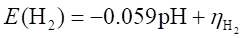
- 0.82 = - 0.059 pH - 0.4 pH = 7.1
15. 10 分 (3056)
[答] pH = 1.0 的溶液，其 OH- 浓度为 1×10-13 mol/L
O2 析出时，pO2 应为 1 大气压(101325Pa)
4OH- = O2 + 2H2O + 4e-
0.059 pO2
�� E = E q + ──── lg ───── = + 1.18 V
4 [OH-]4
��E (析) = E + hO2 = + 1.58 V
16. 5 分 (3062)
[答]
Q M
根据 Faraday 电解定律 m = ─── × ───
F n
Q = 0.118×2×96487/59 = 386 C
17. 5 分 (3129)
[答] 亚砷酸盐的浓度：
0.0015×(4×60+27)×1000
──────────── = 2.08×10-5 mol/L
96487×100×2
滴定反应式
I2 + HAsO32- + 2OH- = 2I- + HAsO4+ H2O
18. 10 分 (3321)
[答] (1) E (阴) ＝〔 0.854 ＋ ( 0.059／2 )×( lg1.00×10-6)〕－ 0.241
＝ 0.436 V (vs SCE)
(2) Hg2+＋ 2SCN-= Hg(SCN)2
K(稳) ＝[Hg(SCN)2]／([Hg2+][SCN-]2) ＝ 1.8×107
[Hg(SCN)2]＝ 1.00×10-6－ x ゐ 1.00×10-6
[Hg2+]＝[Hg(SCN)2]／〔(1.8×107)(0.100)2〕
＝ 1.00×10-6／〔(1.8×107)(0.100)2〕＝ 5.56×10-12 mol／L
E (阴) ＝〔0.854＋(0.0591／2)(lg5.56×10-12)〕－0.241
＝ 0.280 V (vs SCE)
19. 5 分 (3322)
[答] Cu2+开始还原时电位:
�� E (Cu2+／Cu)＝ 0.34＋(0.059／2)(lg[Cu2+])＝ 0.34＋(0.059／2)(lg[0.005])
＝ 0.272 V
0.272 ＝ 0.80＋0.059lg〔Ag+〕
[Ag+]＝ 1.1×10-9 mol／L
20. 5 分 (3323)
（缺）
21. 5 分 (3325)
（缺）.
22. 10 分 (3326)
[答 ]阴极上析出铜的电流效率:
��he/％＝〔 Q／Q(总)〕×100＝〔(m×n×F)／M〕×100／Q(总)
＝〔(0.035×2×96500)／63.5〕×100／(0.2×12×60)
＝ 106.0×100／144.0＝73.9％
阳极上放出氧的电流效率:
��he/％＝〔 Q／Q(总)〕×100
＝〔(8.30×4×96500)／22400〕×100／(0.2×12×60)
＝ 143.2×100／144.0＝99.3％
23. 5 分 (3328)
（缺）
24. 5 分 (3389)
（缺）
25. 10 分 (3390)
[答] (1) E (H+/H2)= E q(H+/H2)+0.059lg[H+]=0.059 +lg0.1 =-0.059V
0.059
-0.059=0.34+ ────lg[Cu2+]
2
[Cu2+] =2.98×10-14mol/L
(2) ��E (H+/H2)= E q(H+/H2)+0.059lg[H+] +h-=0.059lg0.1 +(-0.50)
=-0.559V
0.059
-0.559=0.34+ ────lg[Cu2+]
2
[Cu2+] =3.35×10-31mol/L
26. 5 分 (3391)
（缺）
27. 5 分 (3392)
[答] 设x表示电极完成的分数
(DA/dV)t
ct/c0=(1-x)=10(DA/dV) t
Vdlg(1-x)
t= - ───────
25.8DA
x=0.999
200×2×10-3×lg0.001
t= - ───────────── =10.3min
25.8×3×10-5×150
28. 5 分 (3393)
[答] n=17
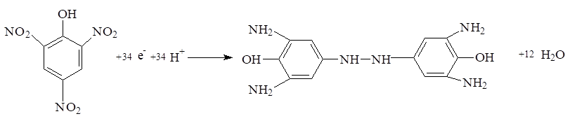
29. 2 分 (3578)
电解池；
阴；
氧化；
E阴－E阳。
30. 5 分 (3381)
[答] lg11.0 - lg10.0
IA= 100×[8+ ────────] =852.3
lg12.0 - lg10.0
A和B不是同系物, 它们保留指数之差不是100的整倍数.
31. 5 分（3382）
[答] KA/KB =0.909, 则αB.A =KB/KA =1/0.909 =1.10
4×1.5×1.10
n(有效) =(────────)2=4356
1.10 -1
L =4356×0.8 »3.5m
32. 5 分 (3383)
[答] (M+1)/M =(1.08×100+0.02×202)/100 =112/100=1.12
33. 5 分 (3384)
[答] (M+2)/M =[(1.08×1+0.02×4)2/200+1×4.40]/100 =4.41/100
34. 5 分 (3385)
[答] (1) M+2峰主要由 81Br贡献, 根据(a+b)n可知(M+2)/M » 1:1,
(2) M+2峰主要由 37Cl贡献, 根据(a+b) n可知(M+2)/M » 3:1,
(3) (M+2/M)×100 =(1.08w+0.02x)2/200+1×4.40
=(1.08×2+0.02×6)2/200+4.40 =4.43
(M+2):M » 4.43:100
35. 5 分 (3386)
[答] 根据二项展开式(a+b)��, 可知:
(1) M:(M+2):(M+4)为1:2:1
(2) M:(M+2):(M+4)为9:6:1 =1:0.67:0.11
36. 5 分 (3387)
[答] M*=M22/M1, M2=(M*×M1)1/2=(158.2×187)1/2» 172
37. 5 分 (3389)
（缺）
38. 10 分 (3390)
[答] (1) E (H+/H2)= E q(H+/H2)+0.059lg[H+]=0.059 +lg0.1 =-0.059V
0.059
-0.059=0.34+ ────lg[Cu2+]
2
[Cu2+] =2.98×10-14mol/L
(2) ��E (H+/H2)= E q(H+/H2)+0.059lg[H+] +h-=0.059lg0.1 +(-0.50) =-0.559V
0.059
-0.559=0.34+ ────lg[Cu2+]
2
[Cu2+] =3.35×10-31mol/L
39. 5 分 (3391)
（缺）
40. 5 分 (4411)
（缺）
四、问答题 ( 共10题 )
1. 5 分 (4082)
[答] 1. 注意搅拌
2. 应用大面积阴极
3. 使用去极剂
4. 可适当提高温度
2. 5 分 (4083)
[答]
(1) 选择电极体系
(2) 注意电极隔离
(3) 排除干扰
(4) 应用适当的去极剂
3. 10 分 (4092)
[答](1)阴极 (1分)
2H20 + 2e-→ 2OH-+ H2 （0.5分）
H+ + OH- → H2O （0.5分）
(2) pH 玻璃电极，饱和甘汞电极 （每个0.5分，共1分）
(3)如图： 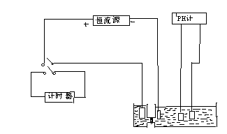
4. 5 分 (4097)
[答] 1. 保证电极反应的电流效率是 100% 地为欲测离子所利用（或者说电极上只有主 反应，不发生副反应）。
2. 能准确地测量出电解过程中的电量。
3. 能准确地指示电解过程的结束。
5. 5 分 (4114)
[答]: 在电解到达终点之前，溶液中有 As(Ⅲ)/As(V)，因为它是不可逆电对，因此在指示电极上外加一个小电压 (50～100 mV) 时不产生电流。当到达电解终点时，溶液中出现2I-/I2可逆电对，因此在指示电极上产生电流。故指示电极上电流与电解时间的关系为：(如图)
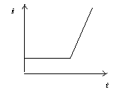
6. 10 分 (4363)
[答] 1. NH4Fe(SO4)2＋ H2SO4, Fe3+＋ e-→ Fe2+, 2H2O → O2＋ 4H+＋4e-
2. K2Cr2O7＋ 6Fe2+＋14H+→ 2Cr3+＋ 6Fe3+＋ 7H2O＋ 2K+
3. 选择电极, 合适的电流密度, 合适电解质, 工作电极和辅助电极隔开, 消除干扰。
4. 指示电极─Pt电极, 参比电极─甘汞电极。
5. 99.95%
7. 5 分 (4665)
化学需氧量（COD）是评价水质污染的重要指标之一。它是指在1升水中可被氧化的 物质（有机物或其它可还原性物质）氧化所需要的氧量。在硫酸介质中，以K2Cr2O7为氧化剂，将水样回流10 多分钟，通过Pt阴极电解产生的Fe2+与剩余的K2Cr2O7作用，由消耗的电量计算COD值。
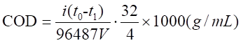
其中t0为电解产生Fe2+标定K2Cr2O7所需的电解时间，t1为测定剩余的K2Cr2O7浓度所 需时间，V为水样体积。
8. 5 分 (4666)
相同点：原理上相似，都是利用电解产生的滴定剂来测定被测物质。
不同点：微库仑分析法输入的电流不是恒定的，而是随被测物质含量的大小自动调节
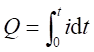
9. 5 分 (4681)
库仑滴定适用于微量、痕量分析 ；
库仑滴定的滴定剂是电生的，可以是不稳定的物质；
库仑滴定是用所需的电量来进行计算，不要求用标准物标定滴定剂。
10. 5 分 (4686)
库仑滴定加入辅助电解质，它的作用是稳定电位，电解时产生滴定剂，保证电流效率达 到100％。
极谱分析加入支持电解质，其作用是消除迁移电流，减少iR降。